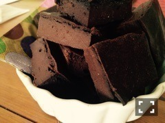
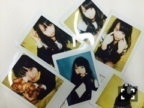

| 2015/02 16 Mon | クレーンケーキ車。 627回目 |

足の甲にキズパワーパッド
バレンタインに
ガトーショコラもどきを作りました。

普通に美味しかったです。
でもこの写真のやつは
甘さが足りなかった...
ので、ビターが好きな伊藤家に笑
牛乳の代わりに豆乳使いました。
バレンタインは誰かに渡すのも
あるけど、私にとっては
何かつくる日なんだよなー
似顔絵会、録音会
当選した方おめでとうございました！
似顔絵は前回よりも
時間が短かった気がする...
それなりに上手く描けたかな？
似てたかなあ？
録音会はただただ恥ずかしいという。
録音することばが
みなさん個性が出ていて
面白かったです！
名前順的に
トップバッターだったから
余計に恥ずかしかった〜
でも他のメンバーの聴いて
にやにやほっこりしてました。
そして京都でアルバム握手会。
1部 おいでシャンプー
2部 ここにいる理由
3部 君の名は希望
4部 涙がまだ悲しみだった頃

どの衣装も好きだけど、
君の名は希望がいちばん好き！
腰部分のジッパーと
胸元のリボンが好き。
歌といい、衣装といい、
乃木坂を感じる。
スタイリッシュ！
色がね！もう紫だしね！
名古屋の握手での衣装は
もう絞られてきたぞ〜

握手会後にのぎ天生配信第2部に
ちょこっと参戦した！
しばらくは釣りサークル部長
として居させてください。
私服手抜きですみませんでした。
のぎ天が始まってから
雑なところが露わになってくるね！
今年は綺麗なスウェットパンツを
上手く取り入れたい。
メガネとニューエラが
いっしょだったいこまりか
バーズデーライブに向けて
がんばるぞー！
まりか
コメント(706)
2015/02/16 22:24